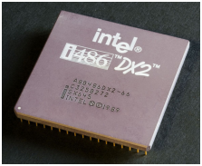
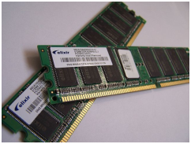
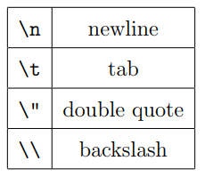

فصل اول
برنامه نویسی کامپیوتر
(Computer Programming)
هدف این کتاب این است که به شما بیاموزد مانند یک دانشمند کامپیوتر فکر کنید. این شیوۀ تفکر، برخی از بهترین
ویژگی های ریاضیات، مهندسی، و علوم طبیعی را با هم پیوند می دهد. دانشمندان کامپیوتر هم مانند ریاضیدان ها
برای بیان ایده های خود (بویژه برای محاسبات) از زبان های صوری استفاده می کنند. آنها مانند مهندس ها طراحی می کنند،
با نصب قطعات سیستم ها را اسمبل می کنند، مانند دانشمندها رفتار سیستم های پیچیده را مشاهده می کنند، فرضیه پردازی می کنند و
پیش بینی های خود را مورد آزمون قرار می دهند.
یکی از مهمترین مهارت های یک دانشمند کامپیوتر حل مسئله است. حل مسئله عبارت است از توانایی فرموله کردن مسائل، تفکر خلاقانه دربارۀ
راه حل ها، و ارائۀ روشن و دقیق راه حل های مسئله. چنانکه مشخص شد فرایند یادگیری برنامه نویسی کامپیوترها فرصتی عالی برای توسعۀ
مهارت های حل مسئله است. در این کتاب، در سطحی، شیوۀ نوشتن برنامه های جاوا را خواهید آموخت که به خودی خود مهارتی سودمند است، اما در سطحی دیگر
از برنامه نویسی به عنوان ابزاری برای رسیدن به هدفی استفاده خواهید کرد که همچنانکه پیش می رویم، این هدف روشن تر خواهد شد.
1.1 کامپیوتر چیست؟
(?What Is a Computer)
وقتی افراد اسم کامپیوتر را می شنوند اغلب به کامپیوترهای دسکتاپ یا لپ تاپ فکر می کنند. جای تعجب نیست که اگر کلمۀ Computer را
در قسمت تصاویر گوگل (https://images.google.com/) جستجو کنید، ردیف ها و ستون هایی از این نوع ماشین ها نمایان خواهند شد.
با این وجود، کامپیوتر به معنای کلی، به هر نوع دستگاه ذخیره سازی و پردازش اطلاعات اطلاق می شود.
سایت Dictionary.com کامپیوتر را به عنوان دستگاه الکترونیکی قابل برنامه ریزی تعریف می کند که به گونه ای طراحی شده است که داده ها
را دریافت کرده، عملیات ریاضیاتی و منطقی که برایش تعیین شده را با سرعت بالا انجام می دهد و نتایج این عملیات را نمایش می دهد.
پردازنده های مرکزی، کامپیوترهای دسکتاپ و لپ تاپ ها، تبلت ها و گوشی های هوشمند از جمله انواع مختلف کامپیوترها هستند.
هر نوع کامپیوتری طراحی منحصر به فرد خود را دارد. اما در داخل همۀ آنها سخت افزاری است که در همۀ کامپیوترها مشترک است. دو قطعۀ سخت افزاری
که در کامپیوترها بیشترین اهمیت را دارا هستند عبارتند از پردازشگرها (CPU) که محاسبات ساده را انجام می دهند و حافظه (RAM) که اطلاعات را به صورت موقت نگهداری می کند.
تصویر 1.1 این قطعات را نمایش می دهد.


تصویر 1.1: مثالی از پردازشگر و سخت افزار حافظه
کاربران معمولا با استفاده از صفحۀ لمسی، صفحه کلیدها و مانیتورها با کامپیوترها در تعامل هستند اما این پردازشگرها هستند که به همراه حافظه،
محاسبۀ واقعی را انجام می دهند. امروزه حتی در گوشی های هوشمند، داشتن حداقل پردازشگر هشت هسته ای و حافظۀ چهارگیگابایتی (یعنی چهار میلیارد سلول)
کاملا عادی است.
1.2 برنامه نویسی چیست؟
(?What Is Programming)
برنامه، دنباله ای از دستورالعمل هایی است که چگونگی انجام یک محاسبه را بر روی سخت افزار کامپیوتر تعیین می کنند. محاسبه ممکن است از نوع
ریاضیاتی باشد مانند حل یک دستگاه معادلات یا یافتن ریشه های یک چند جمله ای. همچنین برنامه می تواند محاسبه ای مانند
جستجو و جایگزین کردن متن در یک سند یا کمپایل کردن یک برنامه باشد.
با اینکه جزئیات دستورات در زبان های مختلف با هم متفاوت هستند اما دستورهای زیر تقریبا در تمامی زبان ها مشترک اند:
ورودی:
دریافت داده ها از صفحه کلید، فایل، سنسور، یا دستگاههای دیگر.
خروجی:
نمایش داده ها بر روی صفحه نمایش یا ارسال داده ها به یک فایل یا دستگاهی دیگر
ریاضی:
اجرای عملیات ریاضی پایه مانند جمع و تقسیم.
تصمیم گیری:
بررسی شرطها و اجرای کد متناسب با شرط ها
تکرار:
تکرار اجرای یک عمل، معمولا با کمی تغییر.
شاید باور نکنید اما این موارد تقریبا تمام آنچه که در یک برنامه وجود دارد را تشکیل می دهند. هر برنامه ای که تا به حال استفاده کرده اید
فارغ از آنکه چقدر پیچیده باشد از دستورالعمل های کوچکی مانند موارد بالا تشکیل شده است. بنابراین می توانید برنامه نویسی را به عنوان فرایند
تجزیۀ یک تکلیف بزرگ و پیچیده به تکالیف کوچکتر در نظر بگیرید. این فرایند تا آنجا ادامه می یابد که تکالیف کوچک به حدی ساده شده باشند تا
با مدارهای الکترونیکی تعبیه شده در سخت افزار اجرا شوند.
1.3 برنامۀ !Hello World
(The Hello World Program)
به طور سنتی موقع یادگیری یک زبان برنامه نویسی جدید اولین برنامه ای که می نویسید برنامۀ «Hello World» نام دارد. تمام کاری که این برنامه انجام می دهد
این است که کلمات !Hello, World را بر روی صفحه نمایش می دهد. در جاوا این برنامه به صورت زیر نوشته می شود:
public class Hello {
public static void main(String[] args) {
// generate some simple output
System.out.println("Hello, World!");
}
}
بعد از اجرای برنامۀ فوق، خروجی زیر نمایش داده خواهد شد:
Hello, World!
دقت کنید که علامت "" در خروجی چاپ نمی شود.
در برنامه های جاوا کلاس و متد تعریف می کنیم. متدها از گزاره ها (statements) تشکیل شده اند. یک گزاره یک خط کد است که یک عمل
پایه را انجام می دهد. در برنامۀ Hello World این خط گزارۀ print است که پیامی را به کاربر نمایش می دهد:
System.out.println("Hello, World!");
در کد بالا، System.out.println نتیجه را بر روی صفحه نمایش می دهد. println مخفف “print line” است. از آنجا که پرینت، هم به معنی
نمایش روی نمایشگر است و هم به معنی ارسال فایل به پرینتر، در این کتاب به جای پرینت یا چاپ
از «نمایش دادن» استفاده می کنیم. مانند اغلب گزاره ها، گزارۀ print به سمیکالن (;) ختم می شود.
جاوا “case-sensitive” است یعنی به حروف کوچک و بزرگ حساس است. در برنامۀ Hello World کلمۀ System با حرف بزرگ شروع می شود
بنابراین با توجه به حساس بودن جاوا به بزرگ و کوچک بودن حروف نمی توان از system و یا SYSTEM به جای این کلمه استفاده کرد.
یک متد دنباله ای است از گزاره ها که دارای یک نام است. در برنامۀ Hello World یک متد به نام main تعریف شده است:
public static void main(String[] args)
اسم و فرمت main خاص و ویژه است. وقتی برنامه اجرا می شود، از اولین گزارۀ موجود در main شروع می کند و وقتی پایان می یابد که آخرین
گزاره به اتمام رسیده است. بعدا برنامه هایی را خواهید دید که در آنها بیش از یک متد وجود دارد.
در این برنامه کلاسی به نام Hello تعریف شده است. فعلا تا همین حد بدانید که class مجموعه ای است از متدها. بعدا دربارۀ کلاس مطالب بیشتری را خواهید خواند.
می توانید برای کلاس ها هر اسمی که می خواهید انتخاب کنید، اما مرسوم است که اسم کلاس با یک حرف بزرگ شروع شود. اسم کلاس باید با اسم فایلی که کلاس
در آن قرار دارد یکی باشد. بنابراین این کلاس باید در فایلی به نام Hello.java باشد.
در جاوا برای گروهبندی چیزها از آکولاد {} و پرانتز () استفاده می شود. در برنامۀ Hello.java از آکولاد در تعریف کلاس و از پرانتز در تعریف متد
استفاده شده است.
خطی که با دو اسلش (//) شروع شده است، یک کامنت است. کامنت متنی است که دربارۀ کد توضیح می دهد. وقتی جاوا به // می رسد تمام آنچه را که
بعد از آن در آن خط نوشته شده را در نظر نمی گیرد و اجرا نمی کند. با وجودیکه کامنت ها نقشی در اجرای برنامه ندارند اما موجب می شوند برنامه نویس های
دیگر (و خود شما در آینده) درک بهتری از کدها پیدا کنند.
1.4 کمپایل کردن برنامه های جاوا
(Compiling Java Programs)
زبان برنامه نویسی که در این کتاب خواهید آموخت زبان جاوا است. زبان جاوا زبانی است سطح بالا. زبان های سطح بالای دیگری نیز وجود دارند که احتمالا اسم
آن ها را شنیده اید مانند پایتون، C، C++، PHP، روبی و جاوااسکریپت.
زبان های سطح بالا پیش از اجرا باید به یک زبان سطح پایین ترجمه شوند که زبان ماشین نامیده می شود. این ترجمه زمان بر است و این یکی از معایب زبان های
سطح بالا محسوب می شود. اما زبان های سطح بالا دو مزیت عمده دارند:
-برنامه نویسی با یک زبان سطح بالا بسیار ساده تر است. فرایند نوشتن برنامه زمان کمتری می برد، کوتاه تر، خواندن آنها آسان تر، و احتمال آنکه درست کار کنند بیشتر است.
-زبان های سطح بالا قابل حمل اند، یعنی می توان آنها را با کمی اصلاح یا حتی بدون تغییر بر روی کامپیوترهای مختلف اجرا کرد. برنامه های سطح پایین فقط بر روی یک نوع کامپیوتر اجرا می شوند.
برنامه هایی که زبان های سطح بالا را به زبان های سطح پایین ترجمه می کنند دو نوع اند: مفسرها و کمپایلرها. مفسر، برنامۀ سطح بالا را می خواند و آن را اجرا می کند، یعنی همان کاری را انجام می دهد
که برنامه می خواهد. مفسر، برنامه را هر چند وقت یکبار پردازش کرده، به طور متناوب خطوط کدها را خوانده و محاسبات را انجام می دهد. تصویر 1.2 ساختار یک مفسر را نشان می دهد:
تصویر 1.2: چگونگی اجرای زبان های تفسیری
در مقابل، کمپایلر، تمام برنامه را می خواند و پیش از شروع اجرای برنامه آن را به طور کامل ترجمه می کند. برنامۀ سطح بالا سورس کد نامیده می شود.
برنامۀ ترجمه شده آبجکت کد یا کد اجرایی نامیده می شود. به محض اینکه برنامه ای کمپایل می شود، می توانید بدون ترجمۀ دوبارۀ سورس کد آن را بارها اجرا کنید.
در نتیجه، برنامه های کمپایل شده اغلب سریعتر از برنامه های تفسیری اجرا می شوند.
دقت کنید که از آنجا که آبجکت کد یک زبان سطح پایین است، قابل حمل نیست. برای مثال شما نمی توانید یک کد اجرایی کمپایل شده در یک لپ تاپ را در یک گوشی اندروید
اجرا کنید. برای آنکه برنامه ای بر روی ماشین های مختلف اجرا شود باید چندین بار کمپایل شود. نوشتن یک سورس کد که به درستی بر روی انواع مختلف ماشین ها کمپایل و اجرا شود
مشکل است.
برای حل این مشکل، زبان جاوا هم کمپایلری و هم تفسیری است. کمپایلر جاوا به جای آنکه سورس کد را مستقیما به کد اجرایی ترجمه کند، کدی برای ماشین مجازی تولید می کند.
این ماشین «خیالی» دارای عملکردی است که در کامپیوترهای دسکتاپ، لپ تاپ ها، تبلت ها، گوشی های هوشمند و غیره مشترک است. زبان این ماشین مجازی بایت کد جاوا نامیده می شود.
بایت کد شبیه آبجکت کد است و تفسیر آن ساده و سریع است.
در نتیجه این امکان وجود دارد که یک برنامۀ جاوا را بر روی یک ماشین کمپایل کنیم، بایت کد را به ماشینی دیگر منتقل کرده و در آن ماشین اجرا کنیم. تصویر 1.3 گامهای
فرایند این توسعه را نشان می دهد. کمپایلر جاوا برنامه ای است که javac نامیده می شود. javac فایل های java را به فایل های class. ترجمه میکند که بایت کد منتج از این ترجمه را ذخیره می کند.
مفسر جاوا، برنامه ای دیگر است که java نامیده می شود که کوتاه شدۀ "Java Virtual Machine" (JVM) است.
تصویر 1.3: فرایند کمپایل و اجرای یک برنامۀ جاوا
برنامه نویس، سورس کد برنامۀ Hello World را در فایل Hello.java می نویسد و برای کمپایل آن از javac استفاده می کند. اگر خطایی وجود نداشته باشد،
کمپایلر، بایت کد را در فایل Hello.class ذخیره می کند. برنامه نویس سپس برای اجرای برنامه باید بایت کد را تفسیر کند که برای این کار از java استفاده
می کند. در نهایت نتیجه بر روی صفحه، نمایش داده می شود.
اگر چه انجام این مراحل ممکن است پیچیده به نظر برسد، اما اغلب محیط های توسعه این کار را به صورت خودکار برای شما انجام می دهند. معمولا فقط
کافی است یک دکمه را فشار دهید یا تنها یک دستور را بنویسید تا برنامۀ شما کمپایل و اجرا شود. از سوی دیگر، دانستن اینکه در پس زمینه چه مراحلی
طی می شود مهم است، چرا که اگر خطایی رخ دهد می توانید علت آن را بفهمید.
1.5 نمایش دو پیام
(Displaying Two Messages)
می توانید هر تعداد گزاره ای که خواستید را در متد main قرار دهید. برای مثال برای نمایش بیش از یک خط در خروجی:
public class Hello2 {
public static void main(String[] args) {
// generate some simple output
System.out.println("Hello, World!"); // first line
System.out.println("How are you?"); // another line
}
}
همچنانکه این مثال نشان می دهد، در عین حال که می توانید هر کامنت را در خطی مجزا بنویسید، می توانید آنها را در انتهای خطوط کدها بنویسید.
متونی که داخل علامت های نقل قول یا کوتیشن "" قرار می گیرند رشته (string) نامیده می شوند، چرا که حاوی دنباله ای از کاراکترها هستند که
در حافظه به هم متصل اند. کاراکترها ممکن است حرف، عدد، علائم نگارشی، نماد، فاصله، تب یا غیره باشند.
دستور System.out.println کاراکتری ویژه به نام newline را ضمیمه می کند که ادامۀ دستورات را به ابتدای خط بعد منتقل می کند. اگر نیاز به newline
یا خط جدید در انتهای این دستور ندارید، می توانید به جای println از print استفاده کنید.
public class Goodbye {
public static void main(String[] args) {
System.out.print("Goodbye, ");
System.out.println("cruel world");
}
}
در مثال فوق اولین گزاره خط جدید را اضافه نمی کند بنابراین خروجی در یک خط نمایان خواهد شد:
Goodbye, cruel world
دقت کنید که در انتهای اولین رشته یک فاصله وجود دارد که در خروجی پیش از کلمۀ cruel قرار می گیرد تا این کلمه به رشتۀ پیش از خود نچسبد.
1.6 قالب بندی سورس کد
(Formatting Source Code)
در سورس کد جاوا، نیاز به استفاده از فاصله هایی در خطوط داریم. برای مثال بین دو کلمه حداقل باید یک فاصله وجود داشته باشد، بنابراین برنامۀ زیر مجاز نیست:
publicclassGoodbye{
publicstaticvoidmain(String[] args) {
System.out.print("Goodbye, ");
System.out.println("cruel world");
}
}
اما استفاده از بیش از یک فاصله در اختیار برنامه نویس است. برای مثال برنامۀ زیر مجاز است:
public class Goodbye {
public static void main(String[] args) {
System.out.print("Goodbye, ");
System.out.println("cruel world");
}
}
خطوط جدید هم اختیاری هستند. بنابراین می توانیم کد بالا به این صورت بنویسیم:
public class Goodbye { public static void main(String[] args)
{ System.out.print("Goodbye, "); System.out.println
("cruel world");}}
این کد هم کار می کند، اما خواندن این کد بسیار سخت است. استفاده از خطوط جدید و فاصله ها برای سازمان دهی بصری برنامه بسیار مهم اند
و به درک بهتر برنامه و یافتن خطاها در صورت وقوع کمک می کنند.
بسیاری از برنامه های ویرایشگر به صورت خودکار سورس کد را با دندانه دار کردن و ایجاد خطوط جدید قالب بندی می کنند. برای مثال در DrJava
می توانید با انتخاب کل متن کد و فشردن کلید Tab تمامی کد را قالب بندی کنید.
سازمان هایی که توسعۀ نرم افزار از کارهای محوری آنهاست معمولا برای چگونگی قالب بندی سورس کد رهنمودهای دقیقی دارند. برای مثال گوگل استانداردهای
خود را برای کدنویسی جاوا به صورت پروژه ای متن باز منتشر می کند: https://google.github.io/styleguide/javaguide.html.
احتمالا الان نمی توانید این رهنودها را درک کنید چون به ویژگی هایی از زبان جاوا اشاره می کنند که هنوز با آنها آشنا نشده اید. اما در طول مطالعۀ این کتاب
ممکن است بخواهید گهگاه به آن مراجعه کنید.
1.7 استفاده از Escape Sequence ها
(Using Escape Sequences)
می توانید تنها با استفاده از یک خط کد، خروجی را در چندین خط نمایش دهید. به مثال زیر توجه کنید:
public class Hello3 {
public static void main(String[] args) {
System.out.print("Hello!\nHow are you doing?\n");
}
}
خروجی کد فوق دو خط است:
Hello!
How are you doing?
n\ یک escape sequence است یا به عبارتی دو کاراکتر است که بیانگر یک کاراکتر هستند. (استفاده از بک اسلش این اجازه را می دهد که
از فرمت رشته فرار کنید تا بتوانید کاراکترهای ویژه را بنویسید.) توجه کنید که در کد بالا بین n\ و How فاصله ای وجود ندارد. اگر بین آنها فاصله بگذارید،
در ابتدای خط دوم یک فاصله قرار خواهد گرفت.

جدول 1.1: escape sequence های رایج
جاوا هشت escape sequence دارد که چهارتا از پرکاربردترین های آنها در جدول بالا آمده است. برای مثال برای نوشتن علامت نقل قول درون رشته ها، باید از بک اسلش
استفاده کنید:
System.out.println("She said \"Hello!\" to me.");
نتیجۀ کد بالا خروجی زیر خواهد بود:
She said "Hello!" to me.
1.8 علوم کامپیوتر چیست؟
(?What Is Computer Science)
در این کتاب به عمد برخی جزئیات زبان جاوا حذف شده اند (مانند escape sequences هایی که در اینجا ننوشتیم)، چون هدف اصلی ما این است که یاد بگیرید چگونه
مانند یک دانشمند کامپیوتر فکر کنید. درک چگونگی انجام محاسبه بسیار ارزشمندتر از یادگیری نوشتن کد است.
اگر علاقه دارید دربارۀ خود زبان جاوا بیشتر یاد بگیرید، Oracle مجموعه ای از آموزش ها را در وبسایت خود منتشر می کند (https://thinkjava.org/tutorial). آموزش
«مبانی زبان» که در بخش «یادگیری زبان جاوا»ی این سایت قرار دارد جای خوبی برای شروع یادگیری جاواست.
یکی از جالب ترین جنبه های نوشتن برنامه، تصمیم گیری دربارۀ چگونگی حل مسئله ای خاص است، بویژه وقتی که چندین راه حل برای مسئله وجود دارد. برای مثال روش های
زیادی برای مرتب کردن لیستی از اعداد وجود دارد و هر کدام از این روش ها مزایای خود را دارند. برای تعیین اینکه کدام روش برای یک موقعیت مشخص بهترین روش است،
به تکنیک هایی برای توصیف و تحلیل صوری راه حل ها نیاز داریم.
الگوریتم دنباله ای از مراحل است که چگونگی حل یک مسئله را مشخص می کنند. برخی الگوریتم ها از بقیه سریعترند و برخی فضای کمتری از حافظۀ کامپیوتر را اشغال می کنند.
علوم کامپیوتر، علم الگوریتم هاست، و شامل کشف و تحلیل آنها می شود. همچنانکه یاد می گیرید چگونه الگوریتم هایی برای مسائلی که پیشتر آنها را حل نکرده اید
توسعه دهید, یاد می گیرید که چگونه مانند یک دانشمند کامپیوتر فکر کنید.
طراحی الگوریتم ها و نوشتن کد، سخت و مستعد خطاست. خطاهای برنامه نویسی به دلایل تاریخی باگ نامیده می شوند و فرایند ردیابی و اصلاح آنها دیباگ کردن یا اشکال زدایی نامیده می شود.
همچنانکه در حال یادگیری اشکال زدایی برنامۀ خود هستید، مهارت های جدید حل مسئله را در خود پرورش می دهید. باید هنگامی که خطاهای غیرقابل انتظار رخ می دهند، خلاقانه فکر کنید.
اگرچه فرایند اشکال زدایی ممکن است گاهی ناامید کننده و با عدم موفقیت همراه باشد، به لحاظ ذهنی و فکری بخشی چالش برانگیز و جالب از علوم کامپیوتر است. اشکال زدایی
از جهاتی مثل کاری است که یک کارآگاه انجام می دهد. سرنخ هایی در اختیار دارید و بر اساس آنها باید فرایندها و رویدادهایی که منجر به نتیجۀ مشهود شده اند را استنتاج کنید.
فکر کردن دربارۀ چگونگی اصلاح برنامه ها و بهبود عملکرد آنها گاهی اوقات حتی منجر به کشف الگوریتم های جدید می شود.
1.9 اشکال زدایی برنامه ها
(Debugging Programs)
بهتر است این کتاب را در کامپیوتر بخوانید تا بتوانید خودتان مثال ها را امتحان کنید. بسیاری از مثال ها را می توانید به طور
مستقیم در پنجرۀ DrJava’s Interactions اجرا کنید. اما اگر کد را در یک فایل سورس قرار دهید آزمایش نتایج حاصل از تغییر در کد ساده تر خواهد بود.
هرگاه ویژگی جدیدی را آزمایش می کنید باید سعی کنید که اشتباه کنید. برای مثال در برنامۀ Hello World اگر یکی از علامت های نقل قول را ننویسید چه اتفاقی می افتد؟
اگر هر دو را ننویسید چطور؟ اگه println را اشتباه بنویسید چطور؟ این نوع آزمایش ها به شما کمک می کنند که آنچه را که می خوانید بهتر به خاطر بسپارید. آنها
همچنین در اشکال زدایی به شما کمک می کنند چون معنی پیغام های خطاها را یاد می گیرید. اگر الان خودتان و به عمد خطا کنید بهتر از این است که بعدا به طور تصادفی
دچار خطا شوید.
اشکال زدایی مانند یک علم آزمایشگاهی است: به محض آنکه ایده ای دربارۀ اینکه چه اشتباهی رخ داده است دارید، برنامه را اصلاح و دوباره امتحان می کنید. اگر فرضیۀ شما
درست بود، می توانید نتیجۀ اصلاح انجام شده را پیش بینی کنید و به یک برنامۀ کارآمد نزدیک تر شوید. اگر فرضیۀ شما اشتباه بود باید فرضیه ای جدید ارائه دهید.
برنامه نویسی و اشکال زدایی باید همزمان انجام شوند. اینطور نباشد که مقدار زیادی کد بنویسید و بعد با آزمایش و خطا آنقدر آن را اشکال زدایی کنید تا خطاها رفع و
برنامه کار کند. به جای این کار، با برنامه ای شروع کنید که کار کوچکی انجام می دهد، تغییرات کوچکی در آن ایجاد کنید، آنها را اشکال زدایی کنید تا جایی که آنچه که از
برنامه می خواهید را انجام دهد. به این شیوه، همیشه برنامه ای دارید که به خوبی کار می کند، و یافتن خطاها ساده تر می شود.
یک مثال عالی از این اصل سیستم عامل لینوکس است که حاوی میلیون ها خط کد است. این سیستم عامل با یک برنامه ساده شروع شد که Linus Torvalds از آن برای کار با تراشۀ 80386
استفاده می کرد. به گفتۀ Larry Greenfield در کتاب The Linux Users’ Guide یکی از اولین پروژه های Linus برنامه ای بود که بین چاپ حروف AAAA و BBBB سوئیچ می کرد. این
برنامه بعدا به لینوکس تبدیل شد.
در نهایت، برنامه نویسی گاهی اوقات همراه با هیجانات شدیدی است. اگر درگیر یک باگ دشوار باشید ممکن است عصبانی و مستاصل شوید یا احساس ناکامی کنید. به یاد داشته باشید که شما تنها نیستید،
و تقریبا همۀ برنامه نویس ها تجربیات مشابهی را داشته اند. دربارۀ تماس گرفتن با یک دوست و سوال کردن از او تامل نکنید.
1.10 واژگان
(Vocabulary)
در طول کتاب سعی بر این است که هر اصطلاحی را که برای اولین بار استفاده می کنیم، تعریف کنیم. در انتهای هر فصل اصطلاحات جدید و تعاریف آنها را
به ترتیبی که استفاده شده اند می آوریم. اگر زمانی را برای یادگیری این واژه ها صرف کنید خواندن فصول بعدی آسان تر خواهد شد.
حل مسئله (problem solving):
فرایند فرموله کردن یک مسئله، یافتن راه حل و ارائۀ آن.
سخت افزار (hardware):
قطعات الکترونیکی و مکانیکی یک کامپیوتر مانند CPU ها، RAM و هارد دیسک ها.
پردازنده (processor):
یک تراشۀ کامپیوتر که دستورات ساده ای مانند حساب ابتدایی و منطق را انجام می دهد.
حافظه (memory):
مدارهایی که داده ها را در طول روشن بودن کامپیوتر نگهداری می کند. آن را با دستگاه های ذخیره سازی دائمی مانند هارد دیسک ها و فلش اشتباه نگیرید.
برنامه (program):
دنباله ای از دستورات که چگونگی انجام تکالیف را بر روی یک کامپیوتر مشخص می کنند. با نام نرم افزار هم شناخته می شوند.
برنامه نویسی (programming):
کاربرد حل مسئله برای ساخت برنامه های کامپیوتر.
گزاره (statement):
بخشی از برنامه که یک مرحله از یک الگوریتم را مشخص می کند.
گزارۀ پرینت (print statement):
گزاره ای که موجب نمایش خروجی بر روی صفحه می شود.
متد (method):
دنباله ای از گزاره ها که دارای یک نام است.
کلاس (class):
فعلا تا این حد بدانید که، مجموعه ای است از متدهای مرتبط با هم. (در ادامه مطالب بیشتری در این مورد خواهید آموخت.)
کامنت (comment):
بخشی از یک برنامه که حاوی اطلاعاتی است دربارۀ برنامه اما تاثیری بر اجرای برنامه ندارد.
زبان سطح بالا (high-level language):
زبان برنامه نویسی که طراحی شده است تا خواندن و نوشتن کد برای انسان ساده تر شود.
زبان سطح پایین (low-level language):
زبان برنامه نویسی که طراحی شده است تا اجرای برنامه در کامپیوتر ساده تر شود. مانند زبان ماشین.
قابل حمل (portable):
توانایی یک برنامه برای اجرا بر روی انواع مختلف کامپیوترها
تفسیر (interpret):
اجرای یک برنامه در یک زبان سطح بالا به گونه ای که در هر لحظه یک خط ترجمه می شود و بلافاصله دستورات متناظر آن اجرا می شوند.
کمپایل (compile):
ترجمۀ یکبارۀ تمامی یک برنامه در زبان سطح بالا به زبان سطح پایین برای آماده کردن آن برای اجراهای بعدی.
سورس کد (source code):
برنامه ای در زبان سطح بالا پیش از کمپایل شدن
آبجکت کد (object code):
خروجی یک کمپایلر پس از ترجمۀ برنامه.
برنامۀ قابل اجرا (executable):
نام دیگری برای آبجکت کدی که برای اجرا بر روی یک سخت افزار مشخص آماده شده است.
ماشین مجازی (virtual machine):
شبیه سازی یک ماشین واقعی. JVM کامپیوتر را قادر می سازد که بتواند برنامه های جاوا را اجرا کند.
بایت کد (byte code):
نوع ویژه ای از آبجکت کد که برای برنامه های جاوا استفاده می شود. بایت کد شبیه به آبجکت کد است اما مانند یک زبان سطح بالا قابل حمل است.
رشته (string):
دنباله ای از کاراکترها. نوع اصلی داده برای متن.
خط جدید (newline):
یک کاراکتر ویژه که نشان دهندۀ پایان یک خط در متن است. همچنین با نام های “line ending”, “end of line” (EOL)، یا “line break” هم شناخته می شود.
escape sequence:
دنباله ای از کد که کاراکتری ویژه را به هنگام استفاده در داخل یک رشته مشخص می کند.
الگوریتم (algorithm):
روش یا فرمولی برای حل یک مسئله، با یا بدون کامپیوتر.
علوم کامپیوتر (computer science):
رویکرد علمی و عملی در محاسبه و کاربردهای آن
اشکال یا باگ (bug):
خطایی در برنامه
اشکال زدایی (debugging):
فرایند یافتن و حذف خطاها
1.11 تمرین ها
در انتهای هر فصل تمرین هایی وجود دارد که می توانید آنها را با استفاده از مطالبی که در طول فصل آموخته اید حل کنید.
شما را تشویق می کنیم که حداقل تلاش کنید تمامی مسائل را حل کنید. نمی توان برنامه نویسی را فقط با خواندن یاد گرفت، باید تمرین کنید.
پیش از آنکه بتوانید برنامه های جاوا را کمپایل و اجرا کنید، باید چندین ابزار را دانلود و نصب کنید. گزینه های خوبی در اختیار دارید،
اما پیشنهاد ما DrJava است که یک محیط یکپارچۀ توسعۀ (IDE) مناسب برای افراد مبتدی است. شیوۀ دانلود و شروع کار با این ابزار در پیوست A
آمده است.
[نکتۀ مترجم: نویسنده های کتاب استفاده از DrJava را به دلیل سادگی آن پیشنهاد داده اند، اما این برنامه بسیار قدیمی است و پیشنهاد
مترجم استفاده از IntelliJ IDEA است.]
کدهای این فصل در پوشۀ ch01 موجود در پوشۀ ThinkJavaCode2 قرار دارد. نحوۀ دانلود مخزن در مقدمۀ کتاب آمده است. پیش از شروع تمرین ها پیشنهاد
می کنیم که مثال ها را کمپایل و اجرا کنید.
تمرین 1.1
دانشمندان کامپیوتر این عادت آزاردهنده را دارند که کلمات معمول در زبان انگلیسی [یا زبان فارسی] را با معانی غیر از معانی رایج آنها استفاده می کنند. برای مثال
در زبان انگلیسی، گزاره ها و کامنت ها یک چیز واحدند، اما در برنامه نویسی این دو با هم متفاوتند.
1- در اصطلاح کامپیوتر، تفاوت میان statement و comment چیست؟
2- منظور از قابل حمل بودن (portable) یک برنامه چیست؟
3- در زبان انگلیسی منظور از کلمۀ compile چیست؟
4- منظور از executable چیست؟ چرا این کلمه به عنوان اسم استفاده شده است؟
هدف از بخش واژه نامه در انتهای هر فصل برجسته کردن کلمات و اصطلاحاتی است که معانی خاصی در علوم کامپیوتر دارند. وقتی کلمه های
آشنایی را می بینید فرض نکنید که معنی آن را می دانید!
تمرین 1.2
پیش از آنکه کار دیگری انجام دهید باید چگونگی کمپایل و اجرای یک برنامۀ جاوا را یا بگیرید. برخی از محیط های توسعه، برنامه های نمونه ای
مانند مثال بخش 1.3 ارائه می دهند.
1. برنامۀ Hello World را بنویسید. سپس آن را کمپایل و اجرا کنید.
2. گزارۀ پرینتی بنویسید که پیامی بعد از !Hello World نمایش دهد، پیامی مانند ?How are you. برنامه را دوباره کمپایل و اجرا کنید.
3. کامنتی در برنامه بنویسید (در هر جایی از برنامه)، برنامه را دوباره کمپایل و آن را اجرا کنید. کامنت جدید نباید تاثیری بر برنامه
داشته باشد.
این برنامه ممکن است کوچک و بی اهمیت باشد اما نقطۀ آغازی برای بسیاری از برنامه هایی است که روی آنها کار خواهیم کرد. برای آنکه اشکال زدایی
برنامه ها را با اطمینان بیشتری انجام دهید، باید به محیط توسعه ای که در آن کد می نویسید اطمینان داشته باشید.
در برخی محیط های توسعه ممکن است در پیگیری برنامۀ در حال اجرا به سادگی دچار مشکل شوید. ممکن است در حالیکه دارید برنامه ای را اشکال زدایی می کنید
تصادفا برنامۀ دیگری را اجرا کنید. اضافه کردن (و تغییر دادن) گزاره های پرینت راه ساده ای برای اطمینان از این است که برنامۀ مورد نظر شما همان برنامۀ در حال اجراست.
تمرین 1.3
بهتر است تا جایی که می توانید در نوشتن برنامه دچار خطا شوید. از این طریق است که می توانید ببینید کمپایلر چه پیغام های خطایی تولید می کند.
گاهی کمپایلر دقیقا می گوید که اشکال برنامه در کجاست، و تمام کاری که شما باید انجام دهید که آن را رفع کنید. اما گاهی اوقات پیغام های خطا
گمراه کننده اند. به مرور خواهید آموخت که چه زمانی می توانید به پیغام های کمپایلر اعتماد کنید و چه زمانی باید خودتان خطاها را پیدا کنید.
در برنامۀ Hello World، خطاهایی که در زیر آمده اند را امتحان کنید. بعد از هر تغییری که انجام دادید، برنامه را کمپایل کرده، پیغام خطا را بخوانید
(اگر پیغام خطایی وجود داشت)، و آن خطا را رفع کنید.
1. یکی از آکولاد های ابتدایی حدف کنید.
2. یکی از آکولادهای انتهایی را حذف کنید.
3. به جای main بنویسید mian.
4. کلمۀ static را حذف کنید.
5. کلمۀ public را حذف کنید.
6. کلمۀ System را حذف کنید.
7. کلمۀ println را به Println تغییر دهید.
8. کلمۀ println را به print تغییر دهید.
9. یکی از پرانتزها را حذف کنید.
10. یک پرانتز به کد اضافه کنید.
(?What Is a Computer)
(?What Is Programming)
(The Hello World Program)
public class Hello {
public static void main(String[] args) {
// generate some simple output
System.out.println("Hello, World!");
}
}
Hello, World!
System.out.println("Hello, World!");
public static void main(String[] args)
(Compiling Java Programs)
(Displaying Two Messages)
public class Hello2 {
public static void main(String[] args) {
// generate some simple output
System.out.println("Hello, World!"); // first line
System.out.println("How are you?"); // another line
}
}public class Goodbye {
public static void main(String[] args) {
System.out.print("Goodbye, ");
System.out.println("cruel world");
}
}Goodbye, cruel world
(Formatting Source Code)
publicclassGoodbye{
publicstaticvoidmain(String[] args) {
System.out.print("Goodbye, ");
System.out.println("cruel world");
}
}public class Goodbye {
public static void main(String[] args) {
System.out.print("Goodbye, ");
System.out.println("cruel world");
}
}public class Goodbye { public static void main(String[] args)
{ System.out.print("Goodbye, "); System.out.println
("cruel world");}}(Using Escape Sequences)
public class Hello3 {
public static void main(String[] args) {
System.out.print("Hello!\nHow are you doing?\n");
}
}Hello!
How are you doing?System.out.println("She said \"Hello!\" to me.");She said "Hello!" to me.
(?What Is Computer Science)
(Debugging Programs)
(Vocabulary)